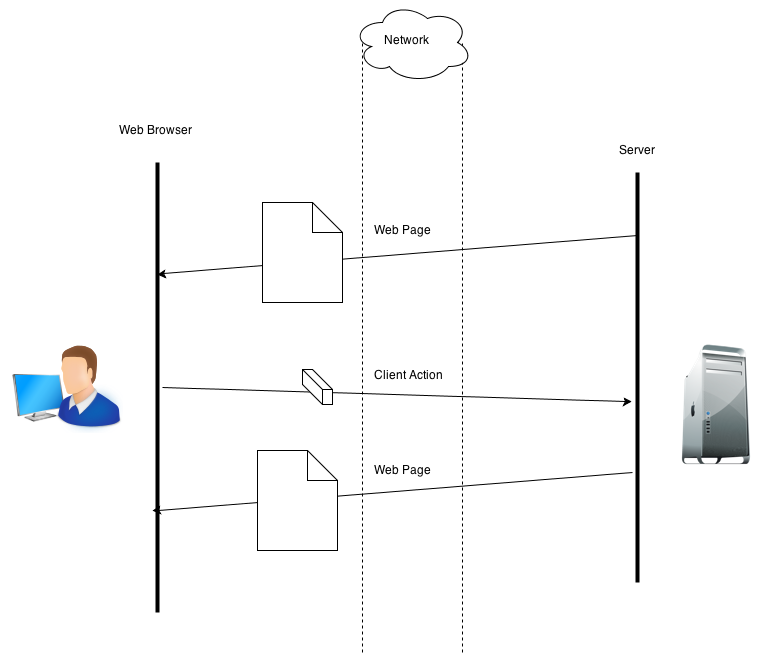
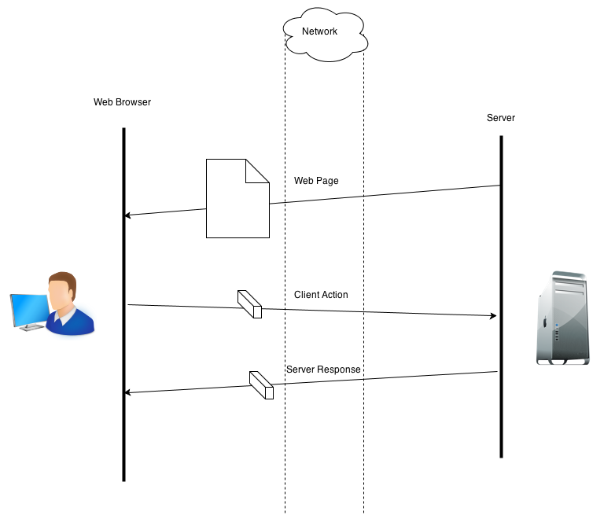
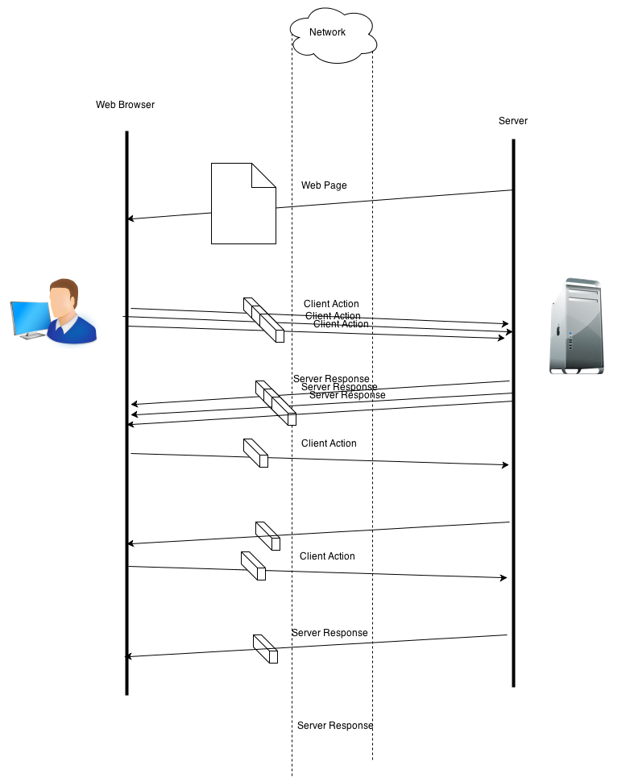
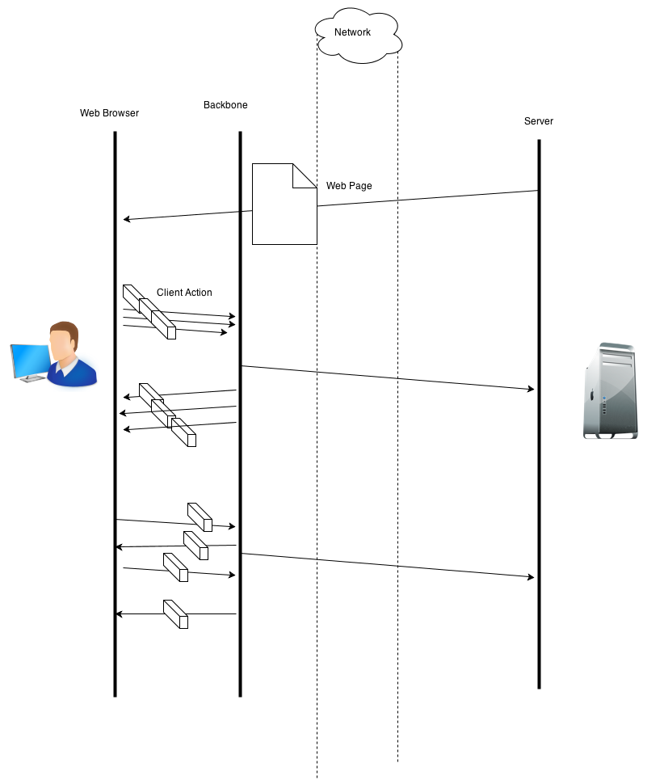

Brief Intro to Backbone
and why we are using it
Created by Gokul Kavaturi
What is JavaScript..?
- JavaScript is not a spin-off of Java
- Prototype based scripting language
- Rules and revisions are governed through ECMAScript standards
Web Applications
in late 90s and early 00s

Pages had to be refreshed to show new content
Web Applications mid 00's

XMLHttp Requests - Asynchoronus data exchange
Web Applications mid 00's

Too many http requests with small payloads crowding the network
Web applications now

Preserving State on the client side
Back to top
Front end MVC frameworks
- Angular
- Backbone
- Ember
- Meteor
Dependecies
- DOM interaction library - jQuery/YUI/Mootools
- Templating Engine - Underscore/Mustache/LoDash
Some frameworks like Angular have no dependencies and provide all the features
What is Backbone.js
- It gives structure to applications
- Decreases direct access to HTML
- Provides a way to store state (data) in the web browser without using HTML
When is it good to use a framework like Backbone ???
Pros
- Very lighweight and flexible
- UI, Backend, Platform - Agnostic
- Transparent Source
Cons
Lacks ready made features
Needs hacking for advanced usage
Programmer has to do most of the work or implement other libraries on top of it